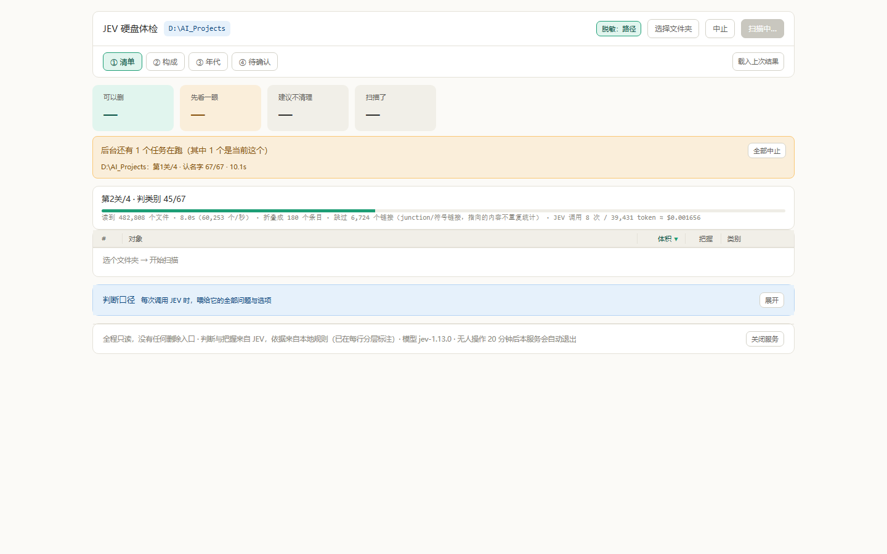
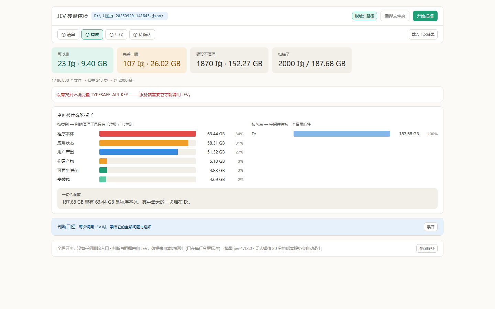

JEV 硬盘体检 · 用起来到底怎么样
方法：本地起服务 → 真实浏览器（Edge 无头 + CDP）逐步点击 → 全程截图 + 量化 → 真扫一次 48 万文件的目录。 所有数字都是本机实测，出处标在括号里。
它的设计思路比市面上几乎所有清理软件高一档——不给你一个"垃圾分"，而是给你三组动作和一堆可核查的依据。扫描过程透明到我挑不出第二家。
但它现在最伤人的问题不是缺功能，是同一个屏幕上几个数字互相打架。 对一个主打"透明、可核查"的工具来说，这是最贵的一类瑕疵——它伤的正好是你唯一想卖的那个东西。
体验分 40.5 / 60（六项，见第 6 节）。分数的分布很不均匀：扫描过程 9.0，细节一致性 6.0，无障碍 2.5。
换句人话：骨架漂亮，肌肉也有，就是接缝处漏风。
01先说清楚：我这两轮是不是跑偏了
是跑偏了。你说得对。
你第一次让我评的是"交互设计、可用性、文档完整性、定位、执行落地"五个维度，那是对的。但后面你说了"修"和"对抗性审查"，我就一头扎进了"有没有 bug"——测试写到 36 条断言、补丁脚本改到 17 个锚点。那回答的是"代码对不对"。
你现在问的是另一件事：「这东西我拿去用，顺不顺手、可不可信、会不会在别人面前掉链子。」
这两个问题的答案可以完全相反。一个程序可以一行 bug 都没有，但用起来让人血压升高；也可以浑身是小毛病，但一上手就知道该干嘛。
所以这一轮我换了方法。不读代码猜体验，而是真的把它打开、真的点。下面每一条结论，要么有截图，要么有实测数字，要么有代码行号。
我起了一个本地服务，用 CDP 驱动真实 Edge 无头浏览器，按真人的顺序点了 15 个步骤：开页面 → 关弹窗 → 载缓存 → 载入 2000 条大结果 → 点名字展开 → 点列头排序 → 切三个页签 → 右键 → 点开目录 → 开选择框 → 展开判断口径 → 切脱敏 → 滚到底。
每一步都截图，并顺手量了 DOM 规模、渲染耗时、滚动高度、可聚焦元素数。然后真的扫了一次 D:\AI_Projects（48 万文件），把进行中那一屏也录下来了。
02好的地方：这几点是真做得好
2.1 一打开就知道要干嘛，而且默认就替你想了隐私
页面加载完，「选择文件夹」弹窗是自动弹出来的（实测 选择框是否自动弹出 = true）。不用找、不用猜。快选里有 C:/D:/E:/F: 四个盘，还有桌面/下载/文档/视频/图片五个常用位置。
更值得说的是：「脱敏」默认是开的，而且是"路径"这一档。标题栏那个 C:\Users\***\Downloads 就是它干的。写这个工具的人显然想过"这东西会被截图发出去"。

首次打开。弹窗自动出现，路径里用户名已经被 *** 盖掉。背景里那条红字是我这次测试没给服务传密钥造成的，不是你正常使用会看到的东西（start.bat 会从 key.txt 读进去）。
2.2 扫描过程透明得有点不像个人项目
这是全场我最服气的一屏。扫描时它不是转一个圈了事，而是实时告诉你：
「当前正在读哪个目录」这一条我在商业磁盘工具里没见过。它不是功能，是态度——它在证明自己真在干活，而不是卡住了。

扫描进行中。上面那条琥珀色横幅和下面这张卡其实在说同一件事的两个不同时间点（第 1 关 vs 第 2 关），这是后面第 3 节要说的毛病之一。
2.3 它不按"分数"组织，按"你要做什么"组织
清单只有三组，顺序固定：可以删 → 先看一眼 → 建议不清理。可删的永远在最上面。
这个选择是对的。市面上大多数工具给你一个"垃圾 12.3 GB"，然后你自己去猜哪些能动。它反过来：先替你分好"哪些能碰"，再把证据摊开。而且「先看一眼」不是和稀泥——低把握、两类之间摇摆、超大件才会掉进去，逻辑在 index.html:340-345，写得很清楚。
2.4 「④ 待确认」是最好的一屏
低把握的条目在这里用红色跳出来，还各配一句人话解释：
temp· 把握只有 0.072603amd比赛· 它自己也在犹豫 —— 在「程序本体」和「构建产物」之间摇摆dsh便携版测试· 它自己也在犹豫 —— 在「构建产物」和「程序本体」之间摇摆
上面还有一句红底说明，把整屏的定位讲死了：「107 项需要你自己看一眼——模型没把握、在两类之间摇摆，或者是超大件。它们不属于『可以删』（工具不替你打包票），也不属于『建议不清理』。」
这屏就是这工具真正的差异化。「我不确定」被当成一等公民，还给了独立的版面。绝大多数 AI 工具会把不确定藏起来。

④ 待确认页。左边红色数字是把握度，右边琥珀色小标签告诉你"为什么它不敢下结论"。颜色在这里是活的——这很重要，第 3.6 条会说到同一套颜色在清单页为什么失效。
2.5 成本这一个数字，就够它站住
64,087 token
$0.0027
12.9 秒
278,562 token
$0.0117
6,806 token
$0.00029
一次全盘体检一分钱。这个数字应该被印在首屏——它是"本地工具 + 云端判断"这条路线最有说服力的证据。
2.6 零报错
15 个交互步骤跑完，控制台异常 0 条。长会话、多次重绘、切页签、重排序，没有一次 JS 报错。这个基本功是扎实的。
03卡住的地方：按"会不会真耽误你"排序
严重度只看两件事：① 会不会让你当场判断错；② 会不会在懂行的人面前露怯。
P0 3.1 同一个屏幕上，调用次数和 token 数有两套值
扫描跑完那一刻，屏幕上同时出现两个不同的数：
JEV 调用 12 次 / 64,087 token180 条归并成 67 类，只判了 12 次JEV 11 次调用 · 60.1k token我把这次扫描的缓存文件打开对了真值：
20260920-160239.json）"requests": 12 "input_tokens": 64087
明细行12 次 / 64,087 ✓ 对
阶段文字12 次 ✓ 对
脚注11 次 / 60.1k ✗ 少了一次
根因不是算错了，是渲染顺序错了。index.html 的 poll() 里（L512-573）：它先更新界面上的文字，之后才把这一轮新拿到的 USAGE / DEDUP / SCAN_STATS 存下来（L558-561）。而表格下方的脚注只在"这一轮有新条目"时才会重画（L517-522）。所以最后一次轮询拿到了最终数字，但脚注拿到的是上一轮的值——脚注永远慢一拍。
为什么这条排第一：你上一轮刚修掉一个"类数当成请求次数"的 bug，就是同一类病症。同一个项目里同一个病复发，说明修的是症状不是病根。而且这次是"真值 12、脚注 11"，差 1 次——不像上次差得那么离谱，反而更容易被当成"四舍五入"糊过去。
P0 3.2 "482,808 个文件 → 判 180 条"——中间那步不见了
同一屏的概要行，在两次不同的载入方式下长得不一样：
1,186,888 个文件 → 归并 243 类 → 判 2000 条三步齐全
482,808 个文件 → 判 180 条"归并 67 类"没了
而缓存里的真值是 "classes": 67, "dedup_saved": 113——这个 67 是实实在在算出来的，只是没显示出来。同一个根因：DEDUP 到得太晚，概要行已经画完了，不再重画。
为什么可惜："180 条归并成 67 类"是这个工具省钱的全部秘密，也是它跟"把每个文件都丢给大模型"最本质的区别。dedup_saved: 113——省掉了 113 次调用。这么漂亮的数字，你只在回放旧缓存时才看得到，刚扫完反而看不到。这让新用户第一次使用时，正好错过了你最想让人看到的那一步。
P0 3.3 「按落点」那一格，扫 D 盘时是一根 100% 的柱子

② 构成页。左半边很漂亮，右半边废了。标题写着"空间往往被一个目录吃掉"，下面只有 D: 一根 100% 的柱子。最后那句"一句话洞察"因此变成废话："187.68 GB 里有 63.44 GB 是程序本体，其中最大的一块堆在 D:。"——废话，本来就在扫 D 盘。
原因是 renderCompose()（index.html:759-764）在算"落点"时，剥掉的是用户主目录 HOME（C:\Users\），而不是本次扫描的根目录。所以：
- 扫主目录里的东西 → 正常，能看出是 Downloads 还是 Documents 吃掉了空间；
- 扫 C 盘以外的任何盘（D/E/F）→ 所有条目都归到"D:"这一格，全是 100%。
这条排 P0，是因为它出现在你打开的第二屏，而且是"看起来在工作、实际上什么都没说"的那种坏。用户不会报错，只会觉得这个功能没用。
P0 3.4 脱敏开到最大档，展开路径还是把文件名漏出来
「脱敏」有三档：关 / 路径 / 路径＋文件名。开到最大档，名字列确实打码了：
Git-•••.exeD:\Backup\XWeChat_files_net\
wxid_****\
msg\file\2022-07\
Git-2.28.0-64-bit.exe我把两个值一起抓出来的（首行名字 = "Git-•••.exe"、首行路径 = "...Git-2.28.0-64-bit.exe"），不是猜的。
代码上很清楚：打码有两个函数。maskName() 会盖住文件名的中间（index.html:379-387），但只管名字列；mask() 只把主目录里的用户名换成 ***（index.html:378）。而展开出来的路径用的是 mask(it.path)（index.html:723）——它没经过 maskName，所以最后那段文件名原封不动。
为什么这条对你特别要紧：你的用途正是录屏和截图发出去。而且泄露的不只是一个文件名——上面那串里有个 wxid_****，那是微信账号 ID。工具建了一个专门防这个的开关，用户开了最大档、以为安全了，结果一展开路径就漏。一个让人产生虚假安全感的安全开关，比没有这个开关更危险。
P1 3.5 清单的尾巴是纯噪声，而你没给它出口
这是"顺不顺手"最要命的一条。D 盘 2000 条的结果，实测：
滚到底那 16 行是这样的：

第 1985–2000 行。全是 1 MB（因为显示精度只到 MB，1.0–1.5 MB 全挤成"1 MB"）、全是「用户产出」、把握度 0.86–0.99。而且同一个文件重复出现好几遍——三行一样的 申论8：文章写作题（文章的结构）.pdf、两行一样的 base.apk.1、两行一样的 mp4。
两个问题叠在一起：
- 没有收敛手段。你知道 1870 条不用管，但界面不让你把它收起来。分组条是个死元素（不是按钮），没有筛选框，没有搜索。一个"帮你做决定"的工具，最后让你滚 122 屏做决定。
- 重复条目看不出是重复的。同一个类里的两条在界面上长得一模一样，因为"同签名 N 条一并判定"这句只写在 hover 提示里（
index.html:367）。另一个字段is_rep（这条是不是这一类的代表）算出来了，但整个前端一次都没用到——我全文搜过，只有class_size出现在 tooltip 里。
顺带一个反直觉的好消息：2000 行全量渲染的性能其实没问题。实测 DOM 里 2000 个 .tr、整页 21,153 个节点、单次 render() 27–35 ms。原来我担心"没有虚拟滚动会卡"，实测这个担心是多余的，2000 条这个量级不用改。真正的问题不是性能，是信息没被收拢。
P1 3.6 「按把握」排序只在一组之内生效，但列头承诺了全局
「把握」列头的原文提示是（实测抓取）：
JEV 自报的把握度 —— 点这列排序，没把握的会浮上来
我点了。结果是：
为什么？因为排序是先按动作分组、组内再按列（index.html:656-666）。「可以删」那 23 条的最低把握就是 0.60（这是设计好的门槛，低于 0.6 会自动掉进「先看一眼」）。所以列头那句"没把握的会浮上来"只在组内成立。
我得说句公道话：分组优先是对的设计，比全局按把握排更有用。问题只在提示文案写大了。"没把握的会浮上来"这句承诺，用户一点就会发现没兑现——那 0.07 没上来，它躺在第 24 行。把这句改成"组内按把握排"就没事了。
顺带一提：低把握的红色在 ④ 页是活的，在①页却几乎看不到——因为凡是低于 0.6 的都被挪进了「先看一眼」，而①页首屏显示的是「可以删」，那 23 条的把握度全在 0.60–0.75 之间。同一套颜色语言，在最重要的那一屏是哑的。这不算错，但值得知道。
P1 3.7 「载入上次结果」永远只载最新那一份
实测：按钮只做两件事——取缓存目录里按文件名倒序的第一份，然后载入它。
const c = await jget("/api/caches");
const r = await jget("/api/replay?file=" + encodeURIComponent(c.caches[0]));
而我数了一下那个目录：20 份缓存文件躺在那里，从凌晨 2 点到下午 4 点，覆盖 Downloads、E 盘、D 盘、whisper_models。你只能拿到最后那一份，没有任何选择界面（实测 有没有让用户挑哪份缓存 = false）。
对录屏这件事，这一条特别不友好：你没法挑一份"最好看"的历史结果来讲。必须现场重扫一次，或者把最新的那份换成你要的那份。而 20 份缓存本身说明——你是真的在用这个工具反复扫，这个需求是真实的。
P2 3.8 三处小状态不对
- 扫描中，表格里写着"选个文件夹 → 开始扫描"。实测扫描进行到 11.6 秒时，空表区域的文案还是这句——你刚点完扫描，它让你去点扫描。
- 点了「中止」，进度条归 0%。实测中止后
进度条宽 = "0%"，但阶段文字明明是"已中止（用户中止）· 读到 158,870 个文件"。进度条归零读起来像"从头开始了"，而不是"停下来了"。根因在index.html:523-526：中止时total_entries为空，算出来就是 0，而"正在扫描/判断时兜底给 12%/40%"那两个分支不覆盖cancelled状态。 - 扫描跑完后，整个列表被刷成"新加入"的绿色。实测
有闪烁行 = 180，而且完成 15 秒后还是 180。这个绿色高亮的本意是"只标刚出来的那几行、700 毫秒后失效"，但扫描结束后不再重绘，最后一轮给 180 条全打上了、再也没清掉。信号全开等于没有信号。
P2 3.9 键盘和读屏：基本是零
tabindex 的元素0 个
带 role / aria-* 的元素0 个
绑定了 onkeydown没有
可聚焦控件53 个（全是原生按钮/输入）
意思是：键盘用户只能 Tab 一个个过 53 个按钮，列表里的行、列、分组条，键盘一个都碰不到。方向键、Enter、Esc、快捷键，一个都没有。列表还带右键菜单，而右键菜单在键盘上等于不存在。
对"个人工具 + 录屏演示"来说这不是致命伤，但它是明确的空白，而不是"可以以后再说"。而且顺带一个真实的小损失：右键菜单里的「打开这个文件夹」「复制完整路径」没有任何视觉入口（列表里没有任何提示说"可以右键"）。不右键的人永远发现不了这两个功能。
P2 3.10 一些小毛刺
- ④ 页的「类别」列会把「可再生缓存」折成两行，① 页不会——同一套五列网格，两处的换行规则不一致。
- 「脱敏」对短名字很无力：目录名
cache只有 5 个字符，打码后是cach•••——泄露了 4 个字符里的 4 个。 - 扫描时同时出现两个进度读数：琥珀横幅说"第1关/4 · 认名字 67/67 · 10.1s"，下面卡片说"第2关/4 · 判类别 45/67"。同屏两个"当前阶段"，两个都自称是当前。
- 同时有两个中止按钮：标题栏的「中止」和横幅里的「全部中止」，文案不同、行为范围不同（一个停当前、一个停全部），但看不出区别。
04量化对照表（一屏看完）
| 指标 | 实测值 | 我的判断 |
|---|---|---|
| 首次打开到能用 | 弹窗自动出现，0 次点击 | 好 |
| 扫描 48 万文件总耗时 | 12.9 s | 好 |
| 扫描钱 | $0.0027 | 很好 |
| 我独立遍历同一目录 | 3.83 s / 12.6 万文件每秒 | 与它同量级，没吹 |
| 2000 行渲染耗时 | 27–35 ms | 不是问题 |
| 2000 行 DOM 节点 | 21,153 | 可接受 |
| 滚到底要几屏 | 122 屏 | 真问题 |
| 分组条 / 筛选 / 搜索 | 都没有 | 真问题 |
| 控制台异常（15 步） | 0 | 好 |
| tabindex / aria / 快捷键 | 0 / 0 / 无 | 空白 |
| 同屏自相矛盾的数字 | 至少 3 处 | 最伤 |
| D 盘真正要处理的占比 | 130 / 2000 = 6.5% | 价值密度低是这类工具的宿命 |
05它其实不是"清理工具"
跑完两轮我有个想法，写下来给你参考。
你扫 D 盘 187 GB，它说"可以删 9.40 GB"，占 5%。扫 AI_Projects 22.5 GB，说"可以删 365 MB"，占 1.6%。如果你按"腾出多少空间"来评价，这工具的产出是可怜的。
但它干了另一件事：它把 187 GB 的构成摊开给你看——63 GB 程序本体、58 GB 应用状态、51 GB 用户产出，然后把 2000 条逐个标了类别和把握度，告诉你哪 130 条值得看。
这不是清理工具，这是体检报告。清理工具承诺"帮你减掉 20 GB"，体检报告承诺"让你知道这 187 GB 是什么"。前者的价值随可删比例下降而消失，后者的价值不依赖这个比例。
而这恰好解释了它为什么会主动建一个「④ 待确认」页——一个清理工具不需要"我不确定"这一栏，一个报告需要。
所以我对它的期待是：别往"多删点"的方向走。它的定位已经比那个高，硬去比"能删多少"反而会掉进自己反对的那条路（"反 360"那套）。真该加的是"把不确定说清楚"的能力——比如让用户能对某一条说"这个我知道是什么"，然后看它怎么改判。这在已有架构上是一个小改动，但会把工具从"看一遍"变成"用起来"。
06体验评分
这一轮全部按"用起来"打分，不按代码正确性。每项满分 10。
#shown 文案为空串）。这个分数不算低。但我想把话说准一点：它的分数不是均匀撒开的，是两头的。设计判断（9.0）、透明（9.0）、上手（8.5）都很好；细节一致性（6.0）和可访问性（2.5）拖得很低。
这种分布说明一件事：这个项目的"想清楚"做得比"抠干净"多。对一个 MVP 来说这是对的顺序。但 3.1 和 3.4 这两条已经不是"没抠干净"了——一条会让人怀疑你的数字，一条会让人误以为自己安全。
07如果只改三件事
第一件：把渲染顺序掰正（改 3 行，一次修好 3.1 + 3.2 + 3.8 第三条）
在 poll() 里，把"存 USAGE/DEDUP/SCAN_STATS"这几行（index.html:558-561）挪到 render() 之前；并且让最后一轮（state 变成 done/cancelled 的那一轮）无条件重画一次表格和脚注。
性价比最高的一刀。它同时消灭"11 vs 12"、"少一步归并"、"绿色高亮清不掉"三个问题，因为它们本来就是同一个根因。你上一轮修的是同一个病的另一个症状——这次修根。
第二件：让清单能收起来（这是"好不好用"的分水岭）
最小版本：分组条变成可点，点一下折叠该组（默认把「建议不清理」折叠起来，显示"1870 项 · 152.27 GB 展开"）。
第二步：加一个筛选（只看「可以删」/ 只看把握<0.6 / 只看某类别），再给清单加一个搜索框。做完这两步，"122 屏"这个数字在体验上就直接消失了——用户看到的永远是几十行。
第三件：把脱敏补全，并且让它敢承诺
展开的完整路径也要过 maskName()（index.html:723）。另外把打码强度做成配置项——现在 MASK_KEEP = 4，对 cache 这种 5 字符名字等于没打。
再进一步：给一个"截图模式"的自检——打开时扫一遍页面上所有可见文本，凡是命中隐私词表（PRIV_PAT 已经存在）的，在角上给一个警告条。你手上已经有 privacy 字段和「隐私?」角标了（D 盘那次真的标出了 4 条），把这套东西反向用在"检查我自己漏没漏"上，是很自然的延伸。
排在后面的（按顺序）：按落点改成剥扫描根（一行）→ 列头提示改成"组内按把握排"（一行）→ 缓存选择器（一个小列表）→ 空态文案区分"没选"和"扫描中"（一行）→ 中止后进度条保持最后一格而不是归零（一行）。
08我没验证到的（说清楚，不装）
- 没有真实键盘操作。我是程序化点击的，没测 Tab 顺序、焦点陷阱、屏幕阅读器。所以"键盘零支持"是从 0 个
tabindex/aria推出来的结论，不是亲手摸出来的体验。 - 没测 Chrome/Safari/Firefox。全是 Edge（Chromium 内核）跑的。
navigator.clipboard、document.execCommand("copy")这种有降级分支的地方我只看了代码，没实测复制成功。 - 没测无权限目录、断网、key 失效这三种真实故障在界面上的表现。上一轮代码层面覆盖过，但"用户看到什么"我没看到。
- 并发多任务只看到界面，没压测。我实测到了"后台还有 1 个任务在跑"这条横幅和「全部中止」按钮，但没真的同时跑两个扫描。
- 扫描进行中我是靠定时抓取的，可能有看不到的瞬态。例如某个中间态只存在几百毫秒，我就漏了。
这东西的设计比市面上大多数商业清理软件高一档，扫描过程透明到我挑不出第二家， 成本低到可以忽略。它现在最缺的不是功能，是把已有的东西收口——数字要一致，隐私要真守住，清单要能收起来。 这三件修完，它就从"一个有意思的 demo"变成"我愿意装在自己电脑上的工具"。
评查方式：本地起服务（端口 8849）→ Edge 无头 + CDP 驱动，15 步交互逐屏截图 → 真实扫描 D:\AI_Projects（482,808 文件）录制全过程 → 缓存 JSON 与 /api/jobs 接口对真值。
项目文件全程只读（唯一落盘副作用是扫描本身写入的 cache/20260920-160239.json，可随时删）。所有截图在 shots/ 目录。